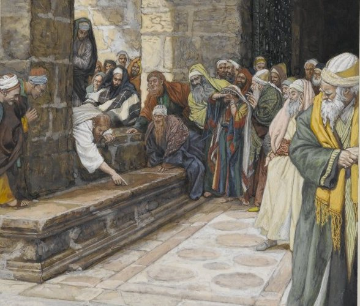
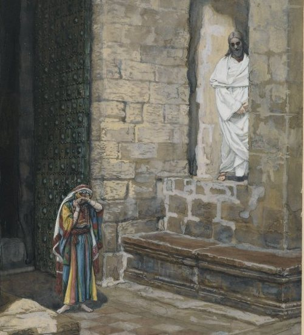

John 8
The light of the world
Jesus refuses to condemn a woman caught in sin, offers freedom to slaves, and claims the very name of God: “Before Abraham was, I am.”
Things to watch for
Keep these questions in the back of your mind as we read. We'll come back to every one of them at the end.
- GraceWhat does Jesus do with a person caught in sin?
- LightWhat does Jesus promise the man who follows him?
- FreedomHow does a man get free from sin?
- Who Jesus isWho did Jesus say he was?
- The enemyHow does the devil work?
- Eternal lifeWhat does Jesus promise the man who keeps his saying?
Part one
Neither do I condemn thee
Verses 1–11
A woman is dragged in front of Jesus, and a crowd waits with stones in their hands.
Everyone else went home
The last chapter ended, “every man went unto his own house.” Jesus went out to the Mount of Olives, the hill just east of the city. During these visits he taught in the temple by day and spent the nights on that hill (Luke 21:37).
At sunrise he was back in the temple courts, sitting down to teach the crowd that came to him. That's when the interruption came.
A trap with a woman as bait
They didn't care about her, and they didn't really care about the law. They wanted something to accuse him with (v. 6). Either answer looked like a loss:
And notice who is missing. She was caught “in the very act,” so where was the man? The law said both should die:
“And the man that committeth adultery with another man’s wife, even he that committeth adultery with his neighbour’s wife, the adulterer and the adulteress shall surely be put to death.”
Leviticus 20:10

One by one, the stones drop
Jesus didn't say the law was wrong. He said, let the sinless man go first. Then he stooped down and wrote again. (The Bible doesn't tell us what he wrote, so we won't guess.)
The oldest left first. They had the longest record, and they knew it. Every man walked away convicted, because there wasn't one man in that crowd without sin. There never is: “For all have sinned, and come short of the glory of God” (Romans 3:23).
The order matters
Religion usually says it backwards. Jesus put it in this order on purpose:
- clean yourself up, then God will take youthat's the world's order
- you're forgiven, so sin doesn't matterthat's cheap grace
- “Neither do I condemn thee: go, and sin no more”grace first, then a changed life
She was guilty, and Jesus didn't pretend she wasn't. He didn't condemn her, and he didn't leave her where she was. Some of us know what it's like to be “taken in the very act,” caught red-handed, with everybody looking. Jesus' first word to you isn't a stone. It's no condemnation.

The one man who could have thrown it
Only one person in that courtyard was without sin. By his own rule, he was the only one with the right to throw a stone. He didn't.
Instead, a few months later, he took the condemnation himself:
“For he hath made him to be sin for us, who knew no sin; that we might be made the righteousness of God in him.”
2 Corinthians 5:21
“There is therefore now no condemnation to them which are in Christ Jesus, who walk not after the flesh, but after the Spirit.”
Romans 8:1
That's why he can say “neither do I condemn thee” and still be just. Your sin wasn't ignored. It was paid for.
Part two
The light of the world
Verses 12–30
Standing where the great feast lamps had burned, Jesus says, “I am the light.”
Where he said it
The treasury stood in the Court of the Women. Old Jewish writings say that during the Feast of Tabernacles, towering golden lampstands burned there at night, so bright that all Jerusalem was lit up.
But the feast was over. The great lamps were dark. And right there Jesus said, “I am the light of the world.” Not a light for one week a year, for one city. A light that never goes out, for everybody.
Seven times, “I am”
This is the second of seven “I am” sayings in John's Gospel. Each one tells us who Jesus is and what he gives:
- the bread of lifeJohn 6:35
- the light of the worldJohn 8:12
- the doorJohn 10:9
- the good shepherdJohn 10:11
- the resurrection, and the lifeJohn 11:25
- the way, the truth, and the lifeJohn 14:6
- the true vineJohn 15:1
A man who has lived in darkness knows what it's like: hiding, lying, stumbling over the same things again and again. Jesus doesn't just point you to the light. He is the light, and if you follow him, you shall not walk in darkness.
Two witnesses
The Pharisees said, you can't be your own witness. Jesus answered with their own law:
“One witness shall not rise up against a man for any iniquity, or for any sin, in any sin that he sinneth: at the mouth of two witnesses, or at the mouth of three witnesses, shall the matter be established.”
Deuteronomy 19:15
Witness one
Jesus
He knows where he came from and where he's going. They don't.
Witness two
The Father
He spoke from heaven, and he backs his Son with the works he gave him to do (John 5:36).
And once again, “no man laid hands on him; for his hour was not yet come.”
“That I am”
that I am he
In a printed King James Bible, the word “he” in verse 24 is in italics. The translators added it to make the English read smoothly. Jesus' actual words are just egō eimi: “I am.”
Every Jew knew that name. It's what God called himself at the burning bush:
“And God said unto Moses, I AM THAT I AM: and he said, Thus shalt thou say unto the children of Israel, I AM hath sent me unto you.”
Exodus 3:14
So this is no small thing. Believe that Jesus is who he says he is, the great I AM come down from above, or die in your sins. There is no third option, and no other way out.
Lifted up
“Lifted up” is how Jesus talks about the cross. John explains it plainly:
“And I, if I be lifted up from the earth, will draw all men unto me. This he said, signifying what death he should die.”
John 12:32–33
The men arguing with him would be the ones who nailed him up there. And the cross, the thing meant to finish him, is exactly what would prove who he is. Even while he said this, “many believed on him.”
Part three
Free indeed
Verses 31–47
Jesus offers freedom, and the crowd insists they've never been slaves.
How freedom comes
People quote “the truth shall make you free” all the time. But read the whole sentence. It's a chain, and every link holds the next:
Freedom isn't a one-time feeling at the altar. It comes as you keep on living in his word: reading it, believing it, doing it. That's how a man learns the truth, and the truth breaks the chain.
“Never in bondage”?
Their own history says otherwise. Count the masters:
- Egypt400 years of slavery
- Assyriathe north carried off
- Babylon70 years of exile
- Persiaruled by its kings
- GreeceAlexander and after
- Romesoldiers in the street, right then
A Roman fort stood next to the temple while they said it. Denial is the first sign of bondage. The man who says “I don't have a problem” is the hardest man to set free.
Slave or son
“Servant” here means a slave (Greek doulos). Anybody who has fought an addiction knows this verse is true. You do what it tells you, even when you hate it.
The slave of sin
“Abideth not in the house for ever”
He has no place of his own. He can be sold or put out any day. He can't buy his own way free.
The Son, and those he frees
“The Son abideth ever”
The Son belongs in the Father's house for good. Whoever he sets free is free indeed, and is made a son who stays.
“Stand fast therefore in the liberty wherewith Christ hath made us free, and be not entangled again with the yoke of bondage.”
Galatians 5:1
Like father, like son
They were proud of their family tree. Jesus says a man shows who his father is by how he lives.
“Know ye therefore that they which are of faith, the same are the children of Abraham.”
Galatians 3:7
Your family line doesn't save you, and it doesn't doom you either. Whatever your father was, by faith you can belong to a new family.
The father of lies
Jesus names the devil's two tools: lies and death. He lies to you so he can kill you. You've probably heard his voice:
- “One more won't hurt.”he's a murderer from the beginning
- “Nobody will ever know.”God knows, and secrets keep you sick
- “You're too far gone.”Jesus just forgave a woman caught in the act
- “The truth shall make you free.”Jesus tells you the truth, because he loves you
“The thief cometh not, but for to steal, and to kill, and to destroy: I am come that they might have life, and that they might have it more abundantly.”
John 10:10
Part four
Before Abraham was
Verses 48–59
Jesus says the most shocking thing he has said yet, and they pick up stones.
He shall never see death.
They heard it as crazy talk: Abraham died, the prophets died, who do you think you are? But Jesus means the death that really matters. His people's bodies may die, but they never face death as judgment and separation from God.
“Verily, verily, I say unto you, He that heareth my word, and believeth on him that sent me, hath everlasting life, and shall not come into condemnation; but is passed from death unto life.”
John 5:24
“And I give unto them eternal life; and they shall never perish, neither shall any man pluck them out of my hand.”
John 10:28
“Hath” is present tense. A believer already has eternal life, today. And “never” means never. Nobody can take you out of his hand, not even you on your worst day.
Before Abraham was, I am
Listen to the grammar. Jesus didn't say “before Abraham was, I was.” Abraham came into being. Jesus simply is.
He isn't claiming to be very old. He's claiming to have no beginning at all. He's using God's own name from the burning bush, I AM, about himself.
They knew what he meant
Nobody stones a man for saying he's old. They picked up stones because they understood: he had just claimed to be God. Under the law, that was the penalty for blasphemy:
“And he that blasphemeth the name of the LORD, he shall surely be put to death, and all the congregation shall certainly stone him: as well the stranger, as he that is born in the land, when he blasphemeth the name of the LORD, shall be put to death.”
Leviticus 24:16
The start of the chapter
Stones for a sinner
Dropped, because not one man there was without sin.
The end of the chapter
Stones for the Sinless One
He walked away untouched. His hour hadn't come. When it did, he laid down his life on his own terms, for the very people holding the stones.
Points to remember
- Grace“Neither do I condemn thee: go, and sin no more” 8:11Grace comes first, then a changed life. His first word to a guilty man isn't a stone.
- Light“He that followeth me shall not walk in darkness” 8:12Jesus is the light that never goes out. Follow him and you won't be stumbling in the dark.
- Freedom“Ye shall be free indeed” 8:36Sin makes slaves. The Son makes free men, and freedom grows as you keep living in his word.
- Who Jesus is“Before Abraham was, I am” 8:58Jesus is the great I AM, God himself, with no beginning.
- The enemy“He is a liar, and the father of it” 8:44The devil lies to destroy you. Answer his lies with the truth Jesus speaks.
- Eternal life“He shall never see death” 8:51The believer already has eternal life, and nobody can take him out of Jesus' hand.
Question 1 of 6
GraceWhat does Jesus do with a person caught in sin?
What verses tell us about this?
“There is therefore now no condemnation to them which are in Christ Jesus, who walk not after the flesh, but after the Spirit.”
Romans 8:1
Answer
He doesn't pretend the sin isn't real, and he doesn't throw the stone. He sends the accusers away, refuses to condemn, and then calls the person to a new life: “go, and sin no more.” He could do that because he would take the condemnation himself on the cross.
Question 2 of 6
LightWhat does Jesus promise the man who follows him?
What verses tell us about this?
“And the light shineth in darkness; and the darkness comprehended it not.”
John 1:5
“The people that walked in darkness have seen a great light: they that dwell in the land of the shadow of death, upon them hath the light shined.”
Isaiah 9:2
Answer
He “shall not walk in darkness, but shall have the light of life.” The feast lamps went out after a week; Jesus' light never does. Follow him, and you're not stumbling around in the dark anymore. You have his life in you, and he shows you the way.
Question 3 of 6
FreedomHow does a man get free from sin?
What verses tell us about this?
Answer
Not by willpower. Sin makes a man a slave, and a slave can't buy his own freedom. The Son sets him free, and then he grows in that freedom by continuing in Jesus' word, learning the truth that breaks the lies he used to live by. “If the Son therefore shall make you free, ye shall be free indeed.”
Question 4 of 6
Who Jesus isWho did Jesus say he was?
What verses tell us about this?
“And God said unto Moses, I AM THAT I AM: and he said, Thus shalt thou say unto the children of Israel, I AM hath sent me unto you.”
Exodus 3:14
Answer
The light of the world, sent from above by the Father, and the great “I AM,” the name God gave Moses at the burning bush. He existed before Abraham was born. The crowd understood the claim exactly, which is why they picked up stones. Jesus is God.
Question 5 of 6
The enemyHow does the devil work?
What verses tell us about this?
“The thief cometh not, but for to steal, and to kill, and to destroy: I am come that they might have life, and that they might have it more abundantly.”
John 10:10
“He that committeth sin is of the devil; for the devil sinneth from the beginning. For this purpose the Son of God was manifested, that he might destroy the works of the devil.”
1 John 3:8
Answer
He lies, and he kills. There's no truth in him. His lies sound like freedom (“one more won't hurt”) but they lead to death. Jesus came to destroy his works and give abundant life. When you hear a lie, answer it with what Jesus says.
Question 6 of 6
Eternal lifeWhat does Jesus promise the man who keeps his saying?
What verses tell us about this?
“Verily, verily, I say unto you, He that heareth my word, and believeth on him that sent me, hath everlasting life, and shall not come into condemnation; but is passed from death unto life.”
John 5:24
“And I give unto them eternal life; and they shall never perish, neither shall any man pluck them out of my hand.”
John 10:28
Answer
He shall never see death. The man who hears and believes Jesus already has everlasting life, has passed from death to life, and will never come into condemnation. His body may die one day, but he will never perish, and no one can pluck him out of Jesus' hand.
Prayer requests
What can we pray about for you today?
“If we confess our sins, he is faithful and just to forgive us our sins, and to cleanse us from all unrighteousness.”
1 John 1:9